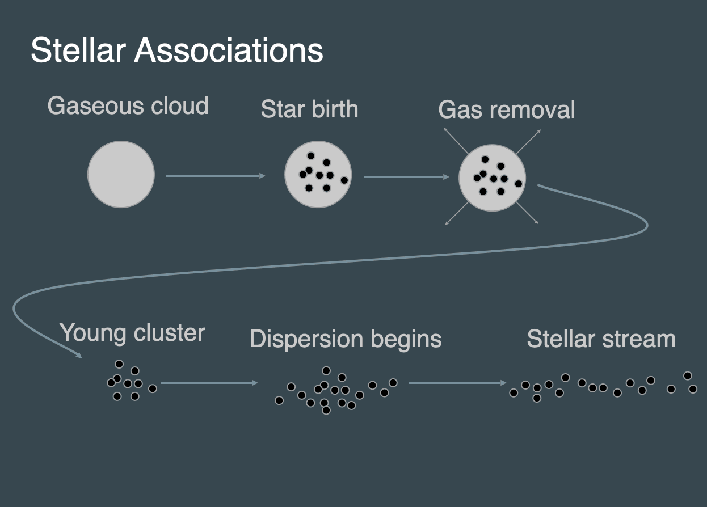
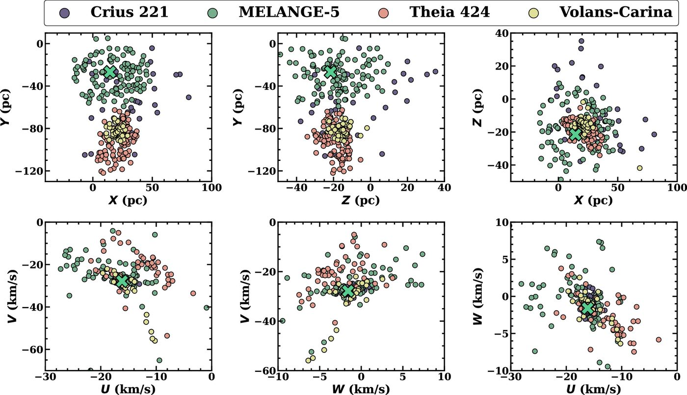
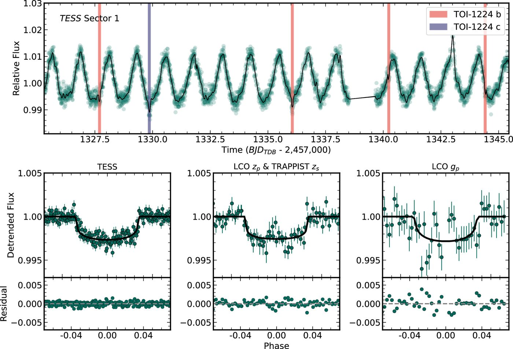
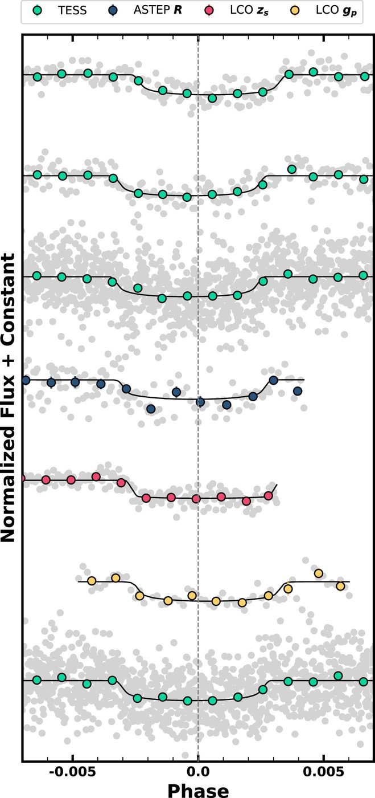
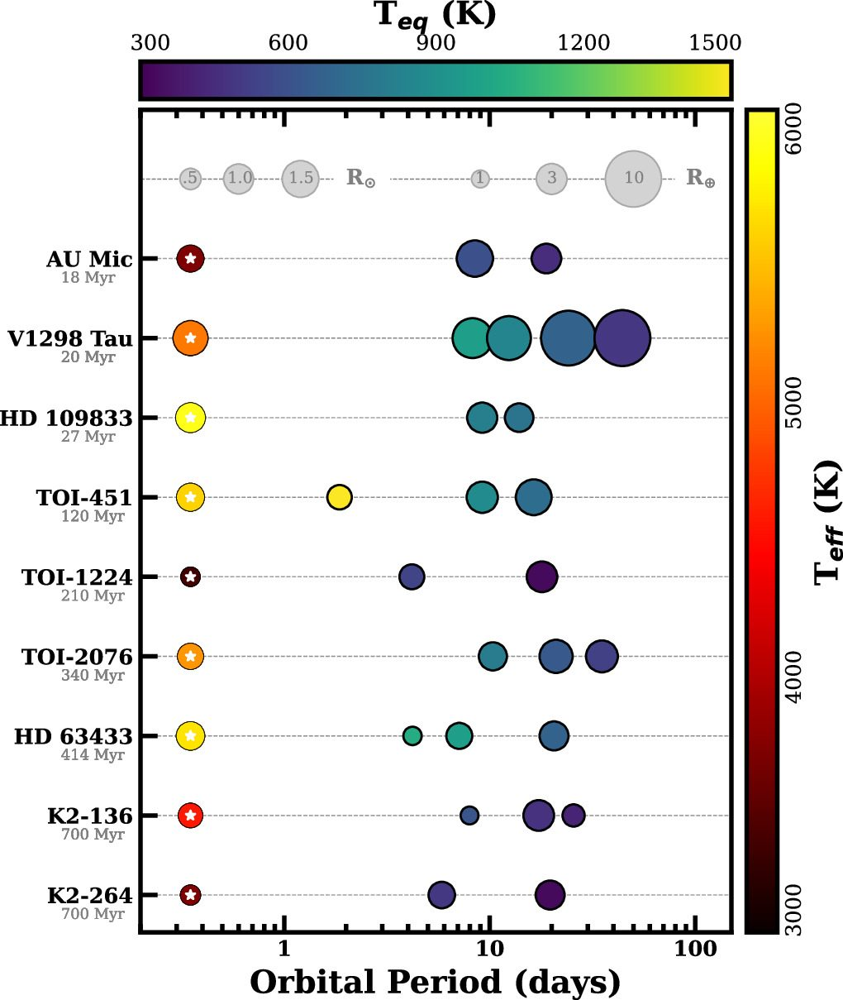

One major focus of the Young Worlds Lab is to study how planets form and evolve. We do this by studying planets at a range of ages and then compare their overall statistical properties. There are a lot of challenges to doing this, but the two biggest are 1) assigning ages to stars and 2) finding planets in the presence of stellar variability common in young stars.

To solve the first problem, we focus on stars in young associations. We use the phrase 'associations' as a broad catch-all of co-eval groups of stars. It includes things like star-forming regions, clusters, and streams. The cartoon on the left is meant to illustrate the point that you get different kinds of groups over time. The later phases are harder to detect because the groups are spread over large distances and have velocity spreads closer to random groupings of (unassociated) stars in the Galaxy.
A general rule of thumb is that clusters breakup on timescales comparable to the Galactic Year (~225 Million years). Some groups, like Globular Clusters, stay bound for billions of years. Some groups go from formation to breakup after just ~10 Myr. It depends on the mass and density of the group, as well as the orbit of the association in the Galaxy. But it is generally true that groups older than 100-200 Myr are harder to find and members harder to identify.
Gaia helps a lot with this because we can map out associations in the full six dimensional space (three spatial dimensions and three kinematic ones). This is how we found a new group - MELANGE-5 (see below).

This figure also points out some of the challenges. Groups can overlap in some (or all) parameters. This is probably why MELANGE-5 was missed. Indeed, an earlier paper put TOI-1224 inside another group - Crius 221. What made us certain MELANGE-5 is a totally separate group is that the ages don't match. Crius 221, Volans-Carina, and Theia 424 (allegedly all one group) are all about 90 Myr, while MELANGE-5 is closer to 200 Myr. The difference is quite clear in the M dwarfs, the coolest of which are still pre-main-sequence at 90 Myr. The whole effort just highlights how challenging this is!
With the association confusion settled, we can focus on the planets. TOI-1224 has two planets (see below)


A young two-planet system would be interesting on its own. But this pair is extra special because it shows transit timing variations (TTVs). You can see this in a deviation of the transit time from expectations. In the plot to the left, the linear expected transit mid-point is a dashed line. The black lines are the best-fit transit models. Some transits are a bit early and some are a bit late. The effect is small (<15 minutes), but easily detectable with precision photometry from TESS and LCO.
TTVs are uniquely powerful, because they let you measure the eccentricity and mass of the planets. Something that's normally difficult for young planets due to excess noise from the host star. We don't have enough transit times to do that for this system, but we hope to gather enough over the coming years to do just that.
This has also motivated checking for more TTVs in other young multi-planet systems, as there is evidence that young systems are closer to orbital resonances than their older counterparts. You can see a nice summary of all the known multi-transiting young planets:
